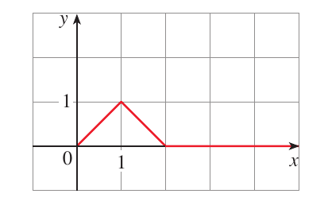
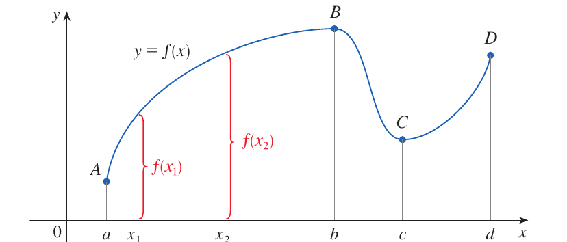

a1. Absolute value functions. Absolute value function is a piecewise defined function as follows:|a|=a
a
if a≥0
-a
if a<0
1.1. Ex:Sketch the graph of the absolute value function f(x)=|x|. f(x)=|x|=a
x
if x≥0
-x
if x<0
1.2. Ex: Find the formula for the following graph.

m1-slope of the line through (0,0) to (1,1).m1=1-0
1-0=1Equation of the line(y-0)=1⋅(x-0)y=x for x∈[0,1]m2-slope of the line through (1,1) to (2,0)m2=0-1
2-1=-1Equation of the line(y-0)=-1(x-2)y=-x+2y=2-x for x∈[1,2]Therefore the functionf(x)=a
x
if 0≤x≤1
2-x
if 1<x≤2
0
if x>2
2. Even and Odd Functions2.1. Even FunctionsIf a function f satisfies f(x)=f(-x) for every number x in its domin, then f is called an even function. Symmetric around y-axis.2.1.1. Ex: f(x)=x2. f(-x)=(-x)2=x2=f(x)f(x)=f(-x)2.2. Odd functionsIf f satisfies f(-x)=-f(x) for every number x in its domain, then f is called an odd function. Symmetric around the origin.2.2.1. Ex:f(x)=x3.f(-x)=(-x)3=-x3=-f(x)2.3. Ex:Determine whether each of the following functions is even, odd or neither even nor odd. 1. f(x)=x5+x. f(-x)=(-x)5+(-x)=-x5-x=-(x5+x)⟹f(-x)=-f(x)Odd function2. g(x)=1-x4.f(-x)=1-(-x)4=1-x4=f(x)⟹f(-x)=f(x)Even function3. h(x)=2x-x2.h(-x)=2(-x)-(-x)2=-2x-x2=-(2x+x2)neither even nor odd3. Increasing and Decreasing FunctionsA function f is called increasing on an interval I if f(x1)<f(x2) whenever x1<x2 in I. A function f is called decreasing on an interval I if f(x1)>f(x2)whenever x1<x2 in I. 3.1. Ex:

f is increasing on the intervals [a,b] and [c,d].f is decreasing on the interval [b,c]. 4. Polynomials A function P is called a polynomial if P(x)=anxn+an-1xn-1+…+a1x+a0,where n is a non-negative integer and the numbers a0,a1,…, an(an≠0) are constants called the coefficients of the polynomial. The domin of any polynomial is R=(-∞, ∞).If the leading coefficient an≠0, then the degree of the polynomial is n.